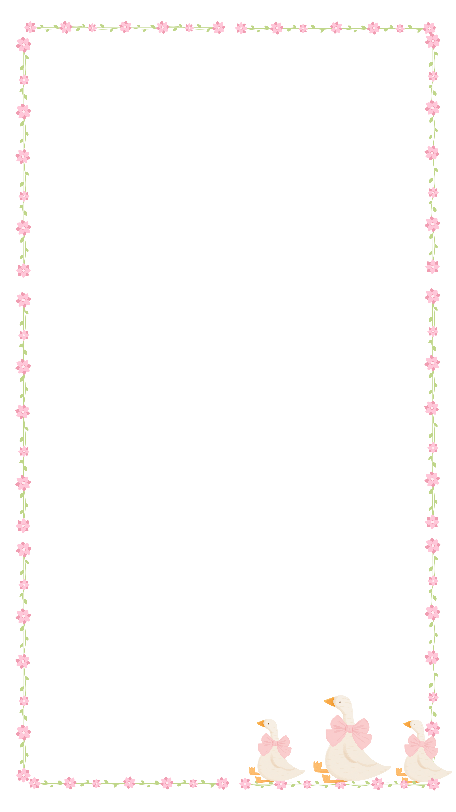

🔴 REC 00:00
🔄
📸
🎥
⏹
Salvar na galeria
Tirar outra
Se estiver no iPhone:
Toque e segure a imagem e selecione “Salvar na Fototeca”.
Salvar vídeo
Se estiver no iPhone e o vídeo não for direto para a galeria:
Abra o app “Arquivos”, toque no vídeo, depois em compartilhar e selecione “Salvar Vídeo”.